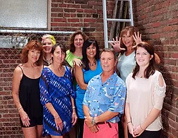

About Us

We started Headhunter Hairstyling with a single goal in mind, to make you feel like each cut or style is special!
Whatever your style, classic or fashion forward, we have the experience to bring your vision to life. With a Barber and six plus Hairstylists on staff we have the right person who can help you with your beauty needs. Stop by and we'll be happy to show you why we've been a staple in historic Pensacola since 1978.
Located on 205 South Baylen Street, we're conveniently located in Downtown Pensacola. Within walking distance to most businesses and restaurants in the Downtown area, swing by during your lunch or come by after work for a cut or style.
Our Stylists
Ellen and Jeff Hunt
We started Headhunters in 1978 with a single target, you! As a team we have worked together for over 41 years to build Headhunters into a Pensacola household name. Whether you're seeing us for your monthly appointment, getting trimmed up for that important meeting, or getting dressed up for an extravagant event, we will get you there. Whatever your style or occasion, we want to be the difference.
Theresa Baggett
Theresa has been with HeadHunter Hairstyling since 1981. She's a Pensacola native and has been a stylist and cosmetologist for 39 years now. A fabulous Master Stylist with multiple talents, she loves doing hair. Whether it's color, cuts (long or short) and everything in between! Reach out and give Theresa a call for a consultation. No matter what you need, she's got you covered.
Cat Scanlon
Cat Scanlon is originally from Brooklyn, NY. Before moving to Pensacola she worked as a master stylist in Manhattan. She has been in the cosmetology field for 35 years and absolutely loves what she does. Cat really enjoys working with clients and meeting their needs. Among some of her favorite things is working Cat is a colorful addition to our staff joining Headhunters in early 2015.
Eileen Smith
Eileen joined the Staff in 1992. Her specialty is Acrylic Nails, and Pedicures with special touch. An artist as well, she has her own Jewelry line too.
Paula McCabe-Finley
Paula McCaleb Finley, Master stylist colorist owned and operated 5 salons in California prior to relocating to Florida. traveled extensively working as an educator platform artist for several color companies such as Matrix, Kadus, Brocator, Framesi, Redkin, Prav Anna and others. Her background is in hair and makeup design for photography and print and formal occasion. She trained in progressive cutting design specializing in contemporary color techniques designed to enhance and maximize the features and styling desires of each individual.
Krissy Kaylor
Krissy is originally from Manhattan, KS. She graduated George Stone as a color specialist and has been doing hair for 12 years now. Since then she has stayed current on the latest trends and styles by taking numerous classes and following all of the hottest celebrities. Krissy really enjoys working with people and making sure all of their hair needs are met. She will go above and beyond for her clientele and makes it a point to be available nights and weekends to fit their needs.
Kathy Morgan
Kathy joined our staff as a wonderful package with Maurene. As a Master Stylist, she exudes a beachy free lifestyle that has grown her business to the vast clientele she has now.